Screens
The identity at work
Twelve screens of the product, in the order an organization meets them: the owner starts it and builds the line, the team signs in and works the day, the owner sees the whole organization, turns what arrives into orders, follows every order and knows every client, anyone can ask Watar about the work, the owner sets the organization up, and its clients answer from a link. The identity is not painted on top; it is how each screen says where work stands. Every image opens the live screen.
Start an organization
iqaa.app/start
An owner names the organization, describes the work in a sentence or picks a field, and approves the line every job will walk.
Where the identity lives
- Sign-up is itself a line of three stations; the stretch behind you fills in as you go.
- Watar’s draft arrives in the dashed grey pen: nothing is real until a person approves it.
- Approving writes the line in one stroke and signs the organization’s mark, the one its team will see at sign-in.
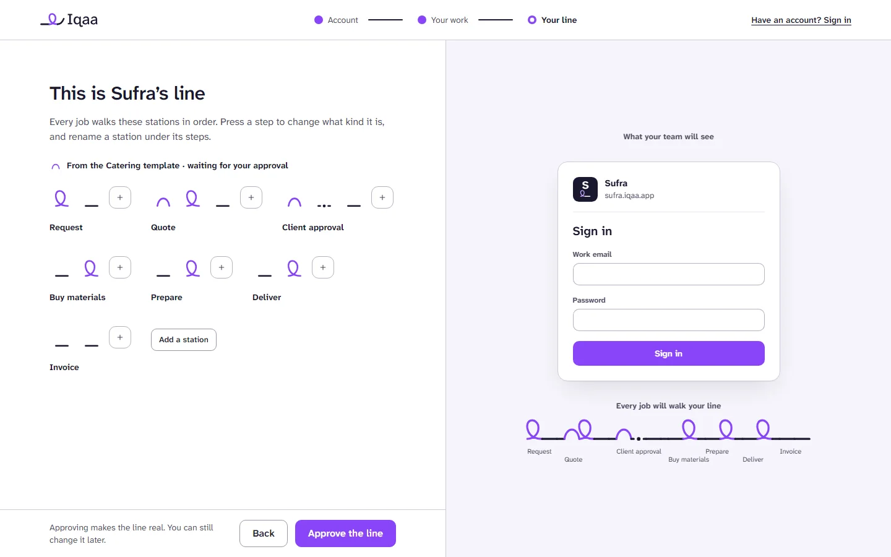
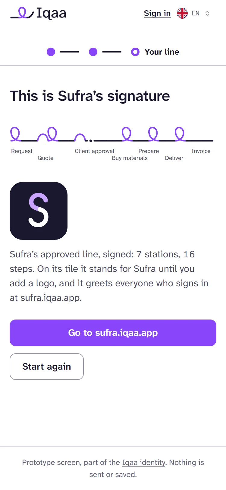
Build the line
sufra.iqaa.app/line
The owner sees every job’s route at once, edits stations and steps, adds a branch or a way back, tests it and publishes a version.
Where the identity lives
- The line is drawn as a metro map: every station an interchange ring, branches at 45°, a way back as a square U-turn.
- The signature stays the line’s name in the head; publishing a new version writes the new one.
- A test job walks the map and leaves the dashed grey trail of things not real yet. Nothing is sent.
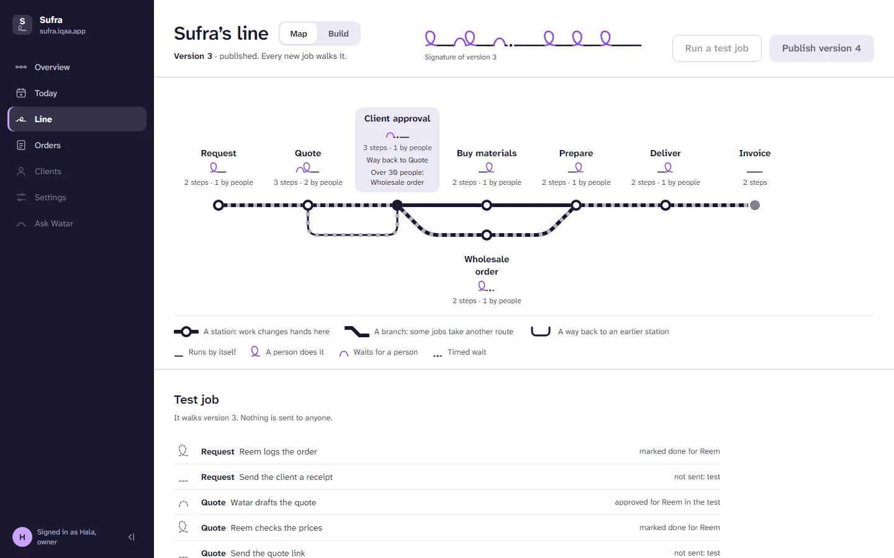
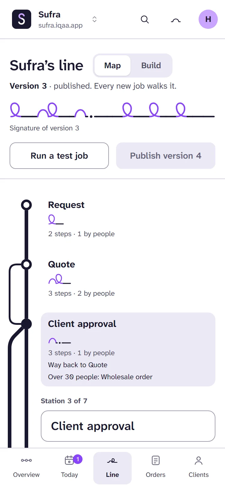
Build it freely
sufra.iqaa.app/line/build
The line on Iqaa’s own drawing board: stations placed anywhere, steps dragged in from a library that reads like the grammar, Watar drafting changes from a sentence, and a test job walking it.
Where the identity lives
- Not boxes and wires: each station is a metro ring with its steps hanging under it in their own strokes, on the identity’s construction grid.
- Track routes itself from ring to ring through the gaps, never across a step; a way back runs under the stations it passes.
- Watar’s drafts arrive in the dashed grey pen until accepted; anything that would stop a job snaps red where it is.
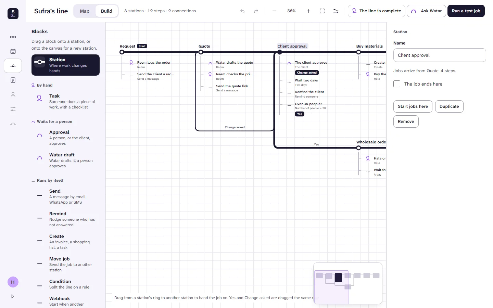
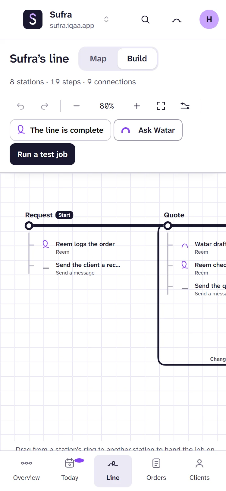
Arrive at your organization
sufra.iqaa.app
The people who work the line sign in on their organization’s own address, often on a phone.
Where the identity lives
- Sufra leads: its mark signs itself as the card opens, and Iqaa signs off at the foot of the page.
- The check runs as a stroke ticking on the beat inside the button.
- Once you are in, the pen writes Sufra’s line across the card and marks your station.
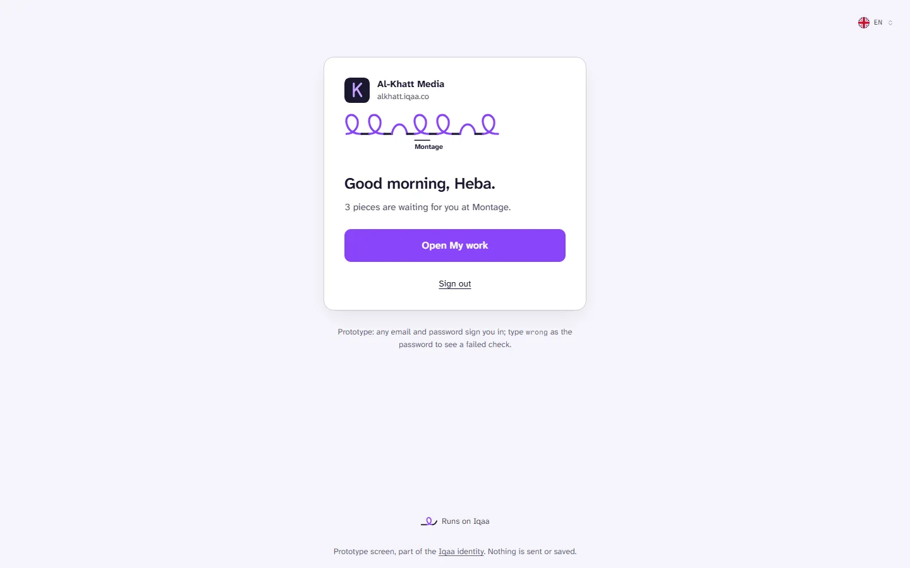
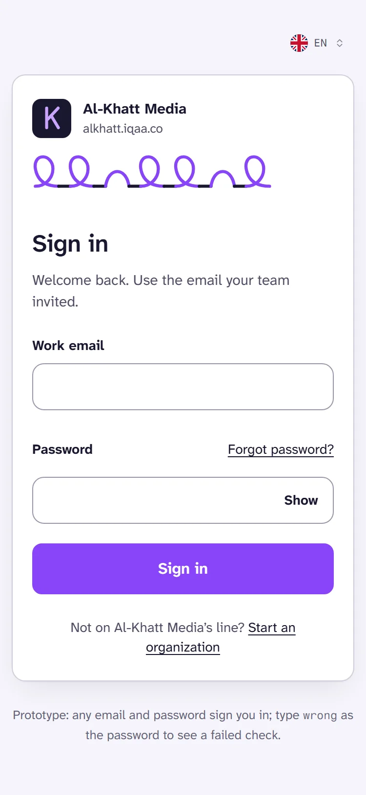
Work the day
sufra.iqaa.app/today
Each person’s station as a platform board: what waits for you now, what is coming to you, what you handed on.
Where the identity lives
- Your day is a line in time: every step you finish is written at its hour, and what is still yours waits ahead in grey.
- Each job carries its metro strip: your stations ringed violet, the job a filled stop.
- Finishing your part sends the job along its strip to the next station; a handoff can be taken back.
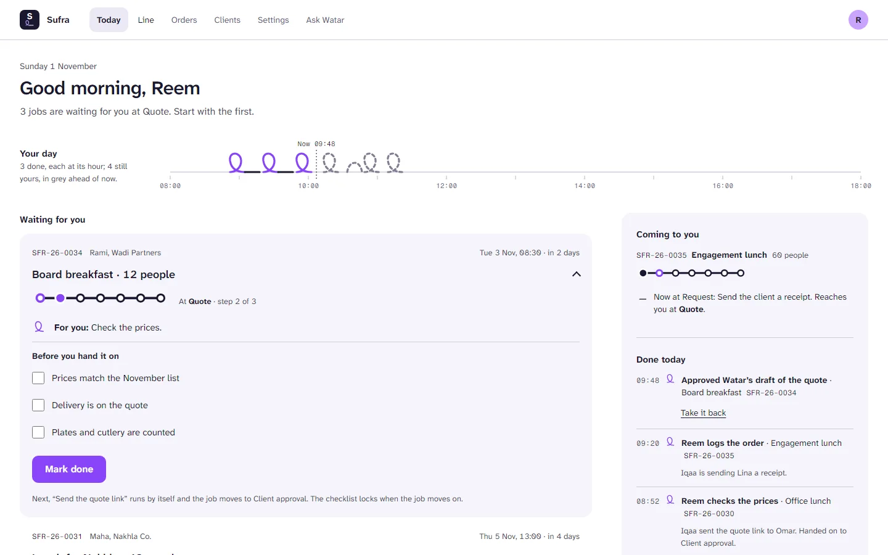
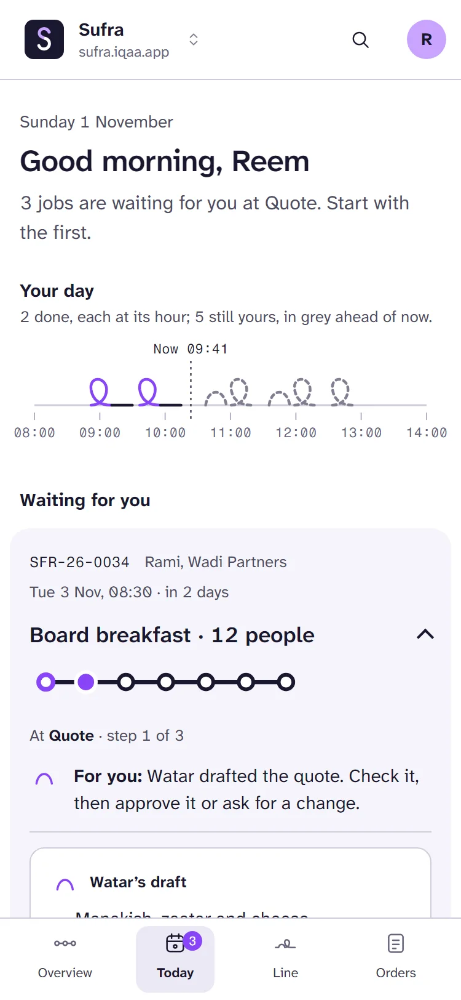
See the whole organization
sufra.iqaa.app
The owner’s first screen: where the jobs are on the line, what the team has done today and what is still theirs, and what needs attention.
Where the identity lives
- The line’s load is a metro map with a count over each station; pressing one opens those orders.
- Each person’s day is a line in time on one shared clock: finished steps at their hour, the rest in grey after now.
- The app frame is Sufra’s: its mark leads the sidebar, the icons are drawn with the line’s strokes.
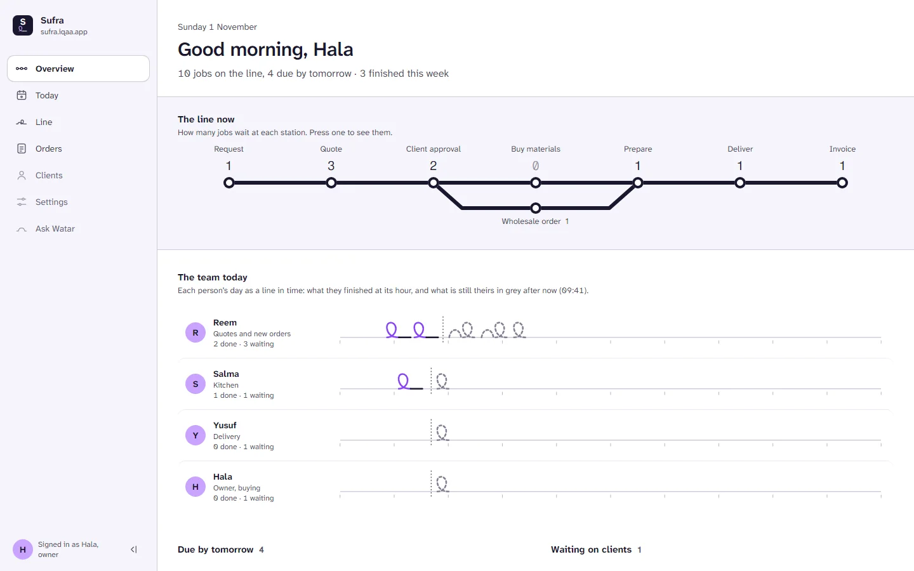
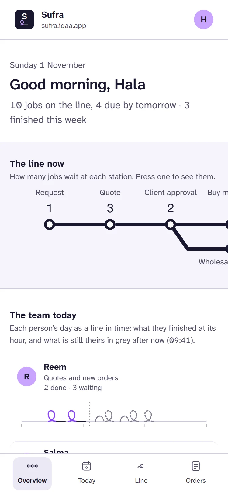
Take in what arrives
sufra.iqaa.app/inbox
Emails and form entries reach the organization before they are orders. Watar reads each one into a draft order; a person makes the order, which joins the line at Quote, or sets the message aside.
Where the identity lives
- Watar’s draft waits in the dashed grey pen, and the words it read every field from are underlined in the same grey, where they stand in the message.
- A field Watar could not read is left open in the draft’s own dashed pen, for a person to fill before the order can be made.
- Making the order is a person’s violet button: the order joins the line at Quote and is on Orders, Today and Clients at once.
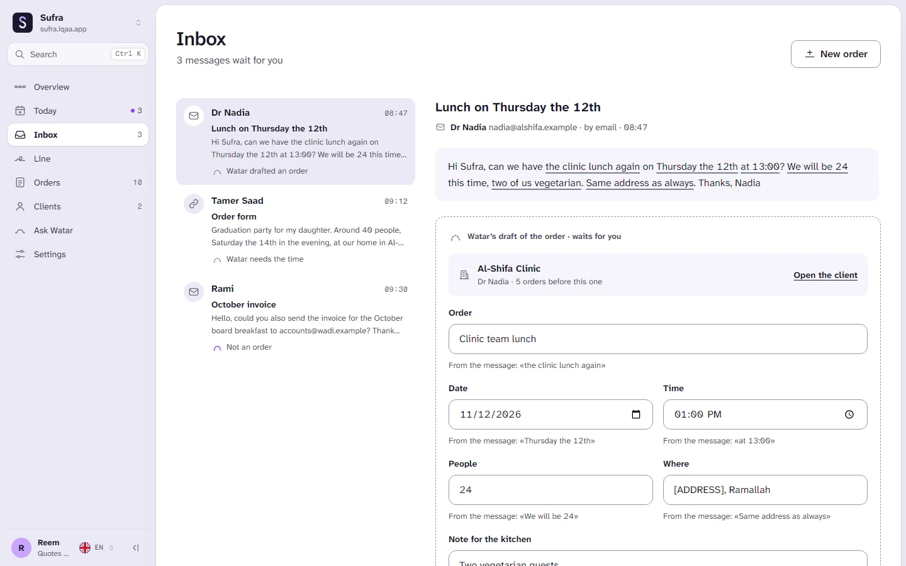
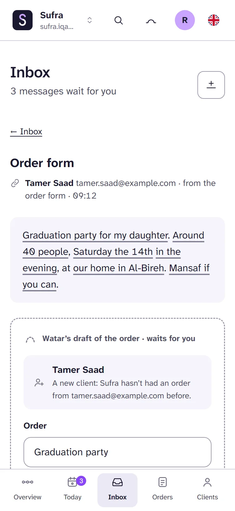
Follow every order
sufra.iqaa.app/orders
The owner sees every job on the line, finds one in a second, and opens it to see where it stands and what is left.
Where the identity lives
- The line itself is the filter: each station shows how many jobs are there, and pressing it lists only those.
- Every row carries the job’s metro strip; the stop is violet when it waits for a person, ink when it runs by itself.
- An order page writes the job’s own line in time: done as real strokes, the pen where the job is, the rest in grey.
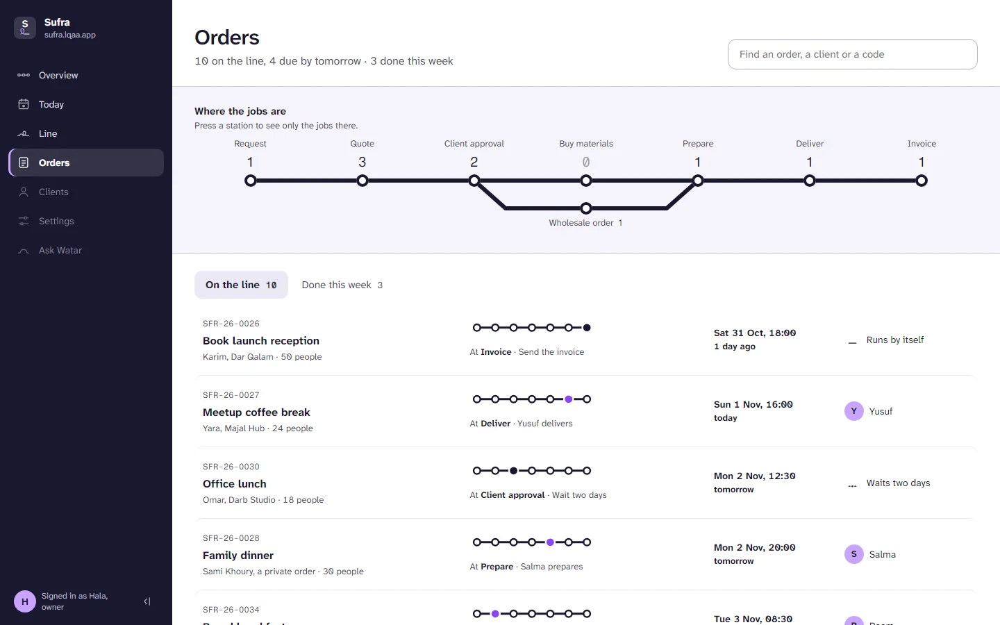
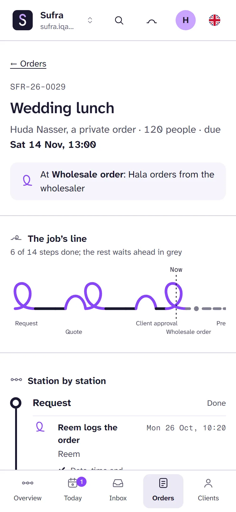
Know every client
sufra.iqaa.app/clients
The owner sees whose move it is with every client, and opens one to see its open order, its line with Sufra and every order before.
Where the identity lives
- Each client’s history is written in the signature’s hand: an arch for every answer Sufra waited for, a lifted pen and a straight where Iqaa had to remind them, a red snap where Sufra arrived late.
- History is evidence at the step it predicts: under “Omar approves”, that Omar answered both earlier quotes only after the reminder.
- The decision is violet, the act is ink: reminding Omar early is a person’s button, and the pen writes the reminder into his line.
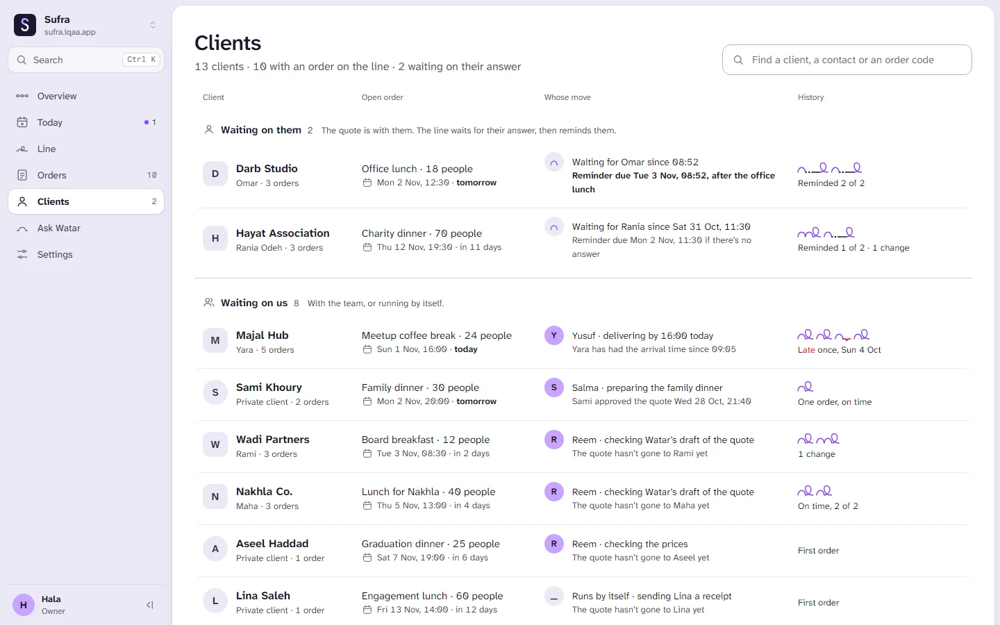
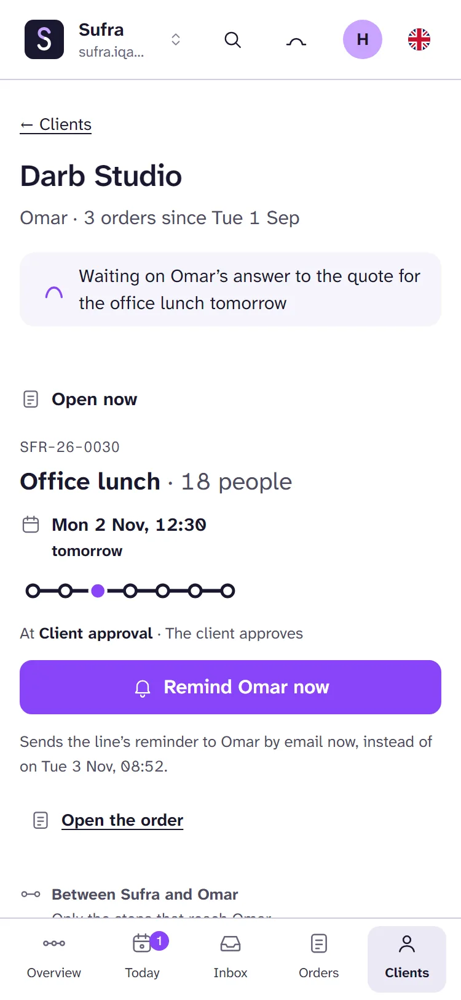
Ask Watar
sufra.iqaa.app/watar
Anyone on the team asks about the work in their own words; Watar answers from the line and its orders, and drafts what could be done for a person to approve.
Where the identity lives
- Watar speaks in grey, behind its own arch; violet marks only what waits for a person: a draft’s arch, Approve, the asker.
- A risk is drawn as the grammar’s lifted pen at its real length: the lunch falls under the pen, and the reminder lands after it.
- Every draft is written in the dashed grey pen down its edge; approving rewrites the arch as a loop and the pen in ink.
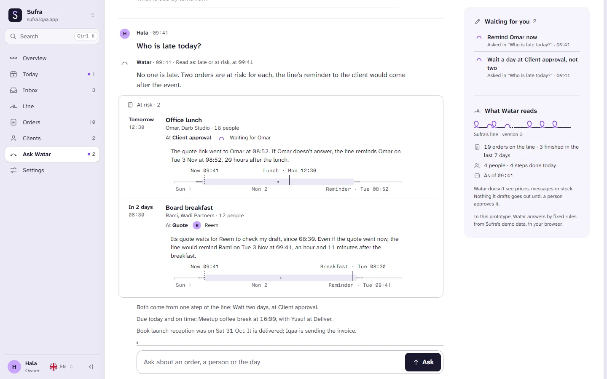
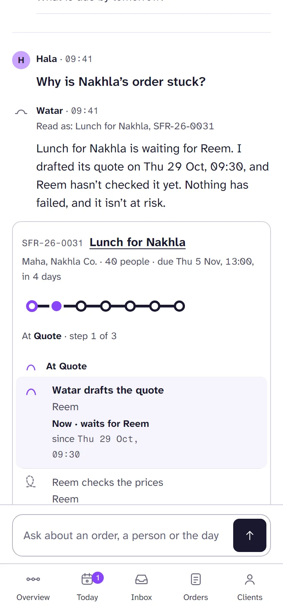
Set up the organization
sufra.iqaa.app/settings
The owner sees who is on the team and what each holds on the line, how the line reaches clients, the organization’s name and mark, and what it pays Iqaa. Every change applies on its own and can be taken back.
Where the identity lives
- Each person carries the line’s metro strip without a train, their stations ringed violet; removing someone stays locked while the line still gives them steps.
- An invitation is a short line: Iqaa’s straight, then an arch that waits for the person; accepting rewrites the arch as a loop.
- The mark is explained by the line that writes it, on an ink plate beside the opening that colours it, and shown only where and at the size it is really used.
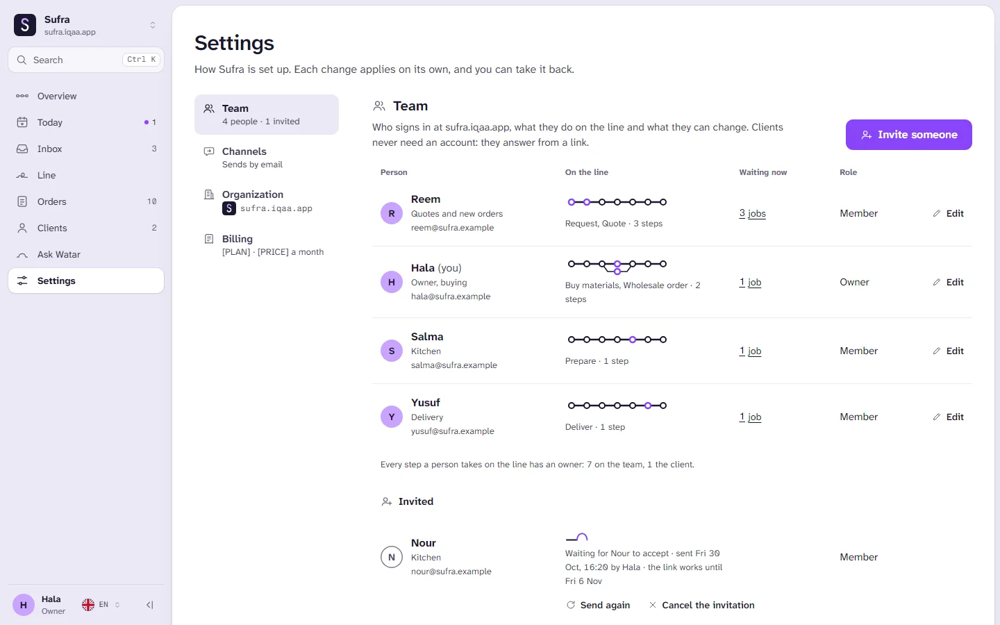
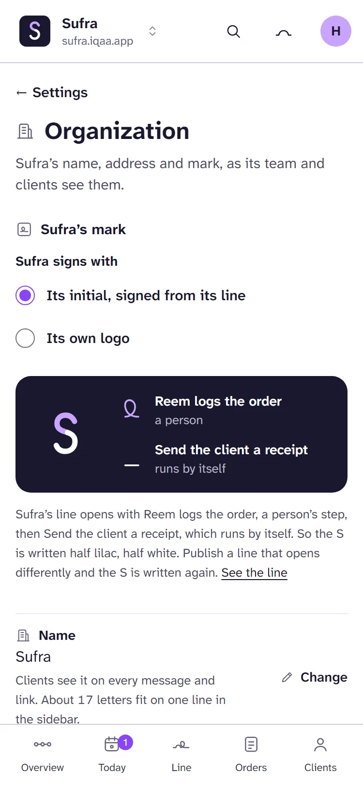
Answer from a link
sufra.iqaa.app/q/0030
The client opens Sufra’s link from an email, without an account: the quote with what is in it, one button to approve and one to ask for a change, and then the order itself until the invoice.
Where the identity lives
- Sufra leads: its own mark and name at the top, and Iqaa signs off once at the foot.
- The client’s answer is an arch on the order’s line while it waits; approving is their hand, and the pen writes the arch as a loop.
- Beside the quote, only the steps that reach the client, in the line’s own strokes: done in ink, ahead in the dashed grey pen.
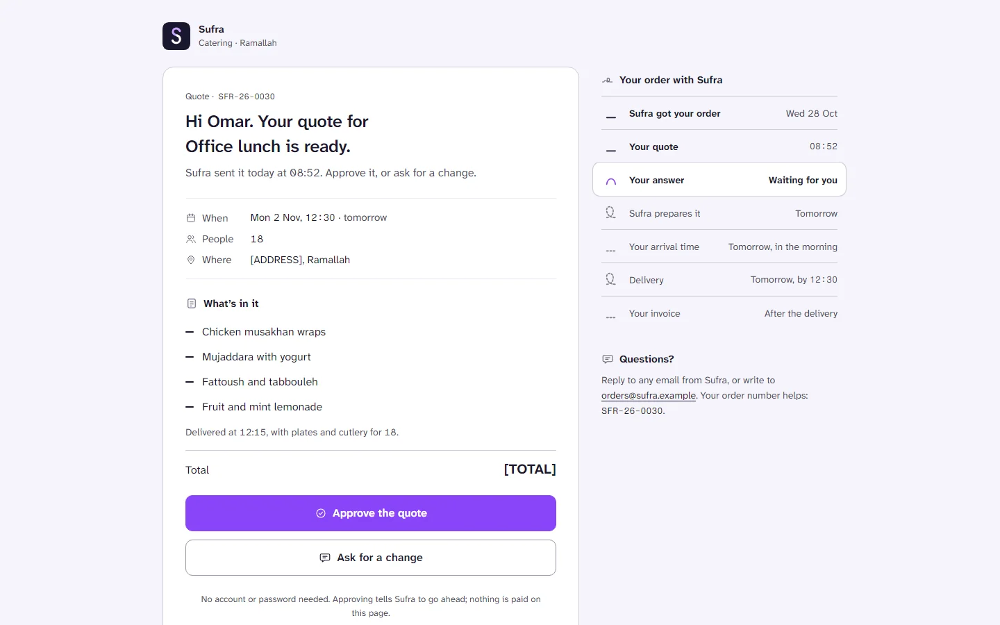
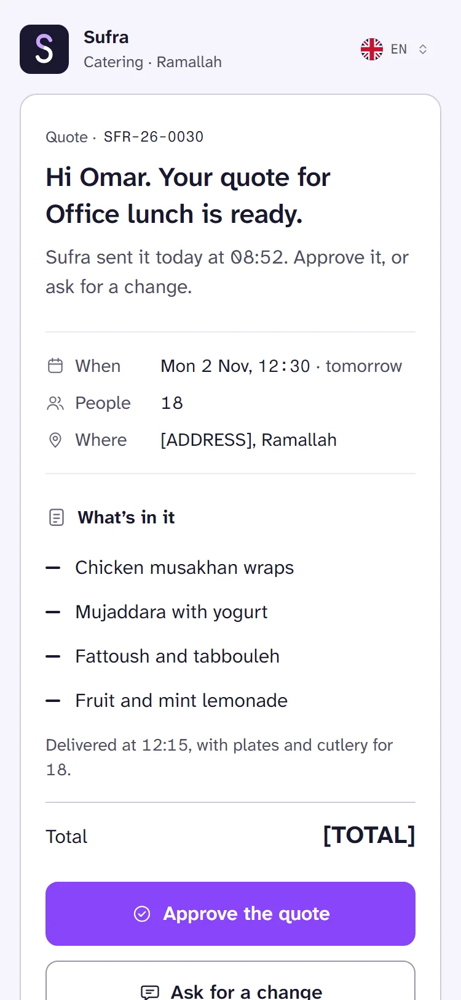